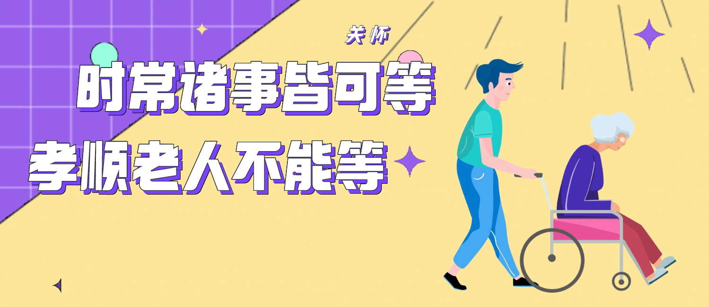
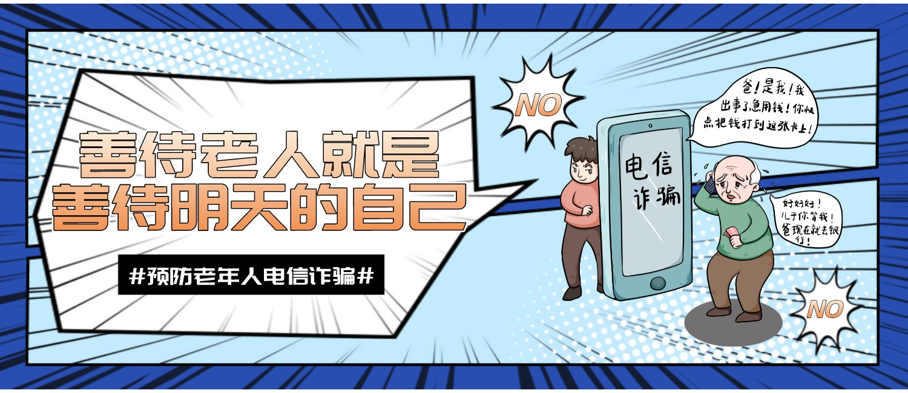
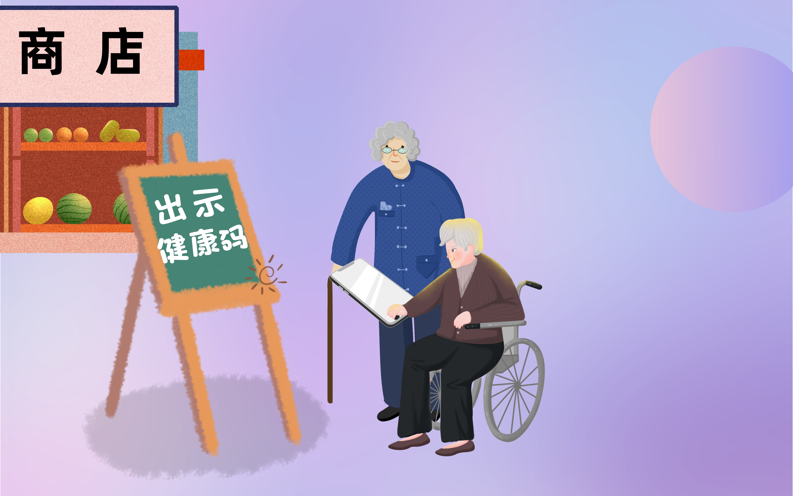

-

- 
-

- 
<
>
根据运营商的统计数据
目前我国仍有1.4亿老年人正在使用功能机
银发网民面对数字鸿沟是一种怎样的尴尬呢？
我们调查发现
老年人数字鸿沟问题主要体现在三个方面：
想用不会用
会用不敢用
以及不会用不愿用

（点此查看）
又或者，他们面对的问题远不止数字鸿沟
根据运营商的统计数据
目前我国仍有1.4亿老年人正在使用功能机
银发网民面对数字鸿沟是一种怎样的尴尬呢？
我们调查发现
老年人数字鸿沟问题主要体现在三个方面：
想用不会用
会用不敢用
以及不会用不愿用
互联网络的接入标志着信息时代的到来
电子设备早已走进寻常百姓家
手机作为便捷和轻巧电子设备的代表
无疑成为百姓使用最多的设备
数据表格
| 2020 | 2021 | |
|---|---|---|
| 台式电脑 | 32.8 | 35.0 |
| 笔记本电脑 | 28.2 | 33.0 |
| 手机 | 99.7 | 99.7 |
| 电视 | 24.0 | 28.1 |
| 平板电脑 | 22.9 | 27.4 |
数据表格
| APP | 网站 | |
|---|---|---|
| 2018年6月 | 421 | 544 |
| 2018年12月 | 452 | 523 |
| 2019年12月 | 367 | 497 |
| 2020年6月 | 359 | 468 |
| 2020年12月 | 345 | 443 |
| 2021年6月 | 302 | 422 |
| 2021年12月 | 252 | 418 |
手机作为人们上网的主要设备
也在一定程度上促进了APP的研发
各式各样的APP也为人们的生活
提供了一种更便捷的方式
根据世界卫生组织最新标准
中年定义为45-59岁
老年定义为60岁及以上
老年人上网也逐渐常态化
银发网民的规模和增速
也上升的越来越猛
随着老龄化、城镇化的加剧
空巢老人持续增长
并且面临更多的生活问题
愈发需要网络应用
以一定程度地解决生活困难
同时
疫情加速了全体网民线上化进程
也直接推动了银发网民往更深处入网
互联网的发展不断充实着老年人的生活
大部分的银发网民都对互联网保持着积极的态度
多方面的改变也优化着他们的使用感受
但是老年人面临的困难往往是更多的
"一机在手，走遍天下"
这句话反映的内容早已成为现实
智能手机的问世
满足了人们大部分的需求
智能手机满足了银发老人跟家人沟通交流的需求
通过快手抖音看段子居家娱乐的需求
更是连看病挂号、特殊时期健康码的出示都满足了
银发老人，不再孤单和安静
他们通过互联网新媒体平台让自己变得更加快乐和时尚
银发族在面对各类生活服务时
有主动触网需求
但作为大龄触网者
仍然存在许多障碍
2020年末
工业和信息化部要求
应用软件进行适老化及无障碍改造
并且提出首批要求进行
适老化改造的名单 （点此查看）
2022年1月末
工业和信息化部
适老化及无障碍改造行动初步完成
并且发布了首批通过评测的APP名单
共计51家平台的ios和安卓版本的APP （点此查看）
适老化及无障碍改造围绕
以人为本的人机交互
提供多样的操作方式
实现多样的推送形式
形成多样的服务闭环
四条基本原则
适老化是根据老年人需求对软件版本做出的调整改变
接触适老化版本的人群已经占全体人群的50%以上
但未接触人群依然占大多数
适老化版本方便了老年人生活
可以改善老年人使用智能手机中出现的大部分障碍
但有些复杂的功能时常让老年人感到无所适从
版本改进依然需要
适合老人，对老人实用才是最好的
从键盘到触屏
从普通模式到关怀模式
老年人正在努力跨越时代的鸿沟
向我们靠近
但是
老人需要的
不仅仅是手机上的关怀模式
更需要的是家人的陪伴
数据来源
【1】CNNIC中国互联网络信息中心《第48次中国互联网络发展状况统计报告》
【2】CNNIC中国互联网络信息中心《第49次中国互联网络发展状况统计报告》
【3】中华人民共和国工业和信息化部
【4】社会问卷调查
作者：王敏 武娜娜 张浩
指导老师：李子韵
Copyright©2022 by graduation project com All right reserved